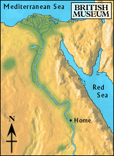

Cataract

After several days of sailing, there was a cry from the deck. The men stopped rowing and the sails were lowered.
The boy looked into the distance and saw the steep cliffs that seemed to rise out of the river. Directly up the river he could see many small islands.
As the boat got closer, he could see the rocks of the cataract sticking up out of the water. The river swirled around these rocks. The boat could go no further up the river.
Should he get off the boat and explore the land, or get on a boat going downstream?